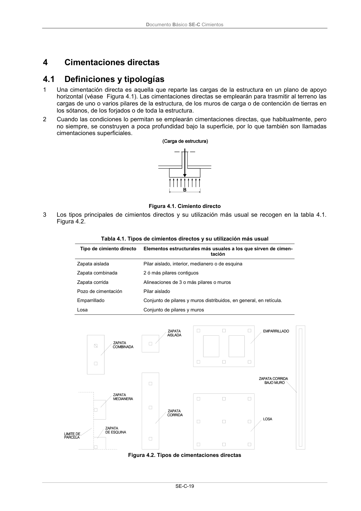

DB-SE-C · Fragmento de PDF p23 · versión 2019-12-20 · capa oficial
Formatos: JSON compacto · Markdown · PDF fuente
Ámbito del documento · texto del ámbito · documento y tablas
ID técnico a0046 · PDF pág. 23-24 · jerarquía no validada por persona · no es capítulo: sin_linea_de_encabezado · padre: raíz · literal original en el contenido: «Confirmación del estudio geotécnico antes de la ejecución»
Confirmación del estudio geotécnico antes de la ejecución 1 Una vez iniciada la obra e iniciadas las excavaciones, a la vista del terreno excavado y para la si- tuación precisa de los elementos de la cimentación, el Director de Obra apreciará la validez y sufi- ciencia de los datos aportados por el estudio geotécnico, adoptando en casos de discrepancia las medidas oportunas para la adecuación de la cimentación y del resto de la estructura a las caracte- rísticas geotécnicas del terreno. Documento Básico SE-C Cimientos SE-C-19 4

PDF fuente redistribuible: copia fiel enlazada en esta página (SHA256 verificado).